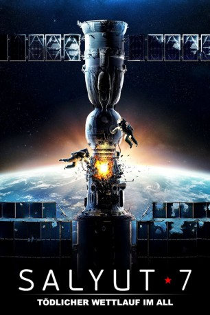
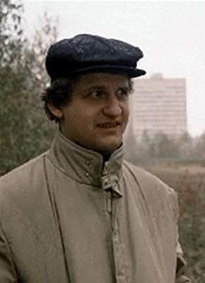

#8538 Salyut-7
 
 IMDB-Wertung: 7.2 / 10
IMDB-Wertung: 7.2 / 10  Tomatometer: 100
Tomatometer: 100  Metascore: 0
Metascore: 0 
1985: Die unbemannte sowjetische Raumstation „Salyut 7“ umkreist die Erde, als sie plötzlich aufhört, auf die Befehle der Bodenkontrolle zu reagieren. Der Ausfall der Station – des ganzen Stolzes der sowjetischen Wissenschaft und Weltraumindustrie – würde nicht nur einen unwiederbringlichen Imageverlust für die Sowjetunion bedeuten, sondern auch unzählige Menschenleben kosten. Um diese Katastrophe zu verhindern, müssen umgehend zwei erfahrene Kosmonauten rekrutiert werden und erstmals an eine unkontrollierbare Raumstation im Orbit andocken. Aber das bleibt nicht die einzige Herausforderung.
Jahr: 2017
Dauer: 118 Minuten
FSK:
Land: Russland Studio: Blue Swan EntertainmentTonspuren: DTS - ,
Untertitel: Deutsch,
Auflösung: 1080p (1920x808) Größe: 7802 MB
Genre: Action, Drama, Geschichte
Regisseur: Klim Shipenko
Drehbuch: Aleksey Chupov
Soundtrack:
Darsteller:
- Lyubov Aksyonova als
- Pavel Derevyanko als Viktor Savinykh
- Oksana Fandera als
- Igor Ugolnikov als
- Vladimir Vdovichenkov als Vladimir Dzhanibekov
- Sean Michael Thomas als American News Anchor (uncredited)
- Ilya Andryukov als
- Vasiliy Ignatich als Sotrudnik TsUP
- Vitaliy Khaev als
- Sergey Korenkov als Sotrudnik TsUP
- Natalya Kudryashova als
- Vladimir Matveev als General TsUP
- Mariya Mironova als Nina
- Nikita Panfilov als Zaytsev
- Leonid Paranin als Sotrudnik TsUP
- Stepan Patnikov als Sotrudnik TsUP
- Roman Perelygin als Plakhov
- Polina Rudenko als Olya
-  Aleksandr Samoylenko als Head of flights
- Aleksandra Serebryakova als Sotrudnitsa TsUP
- Oksana Syrtsova als Sotrudnitsa TsUP
Datei: X:\2017(N-Z)\Salyut-7 (2017, FSK, 1920x808).mkv seit 20.03.2018
Festplatte: HD 2017(A-Z)-2018(A-F)
 Es gibt insgesamt 170 Filme in der Gruppe '2017(N-Z)'
Es gibt insgesamt 170 Filme in der Gruppe '2017(N-Z)'